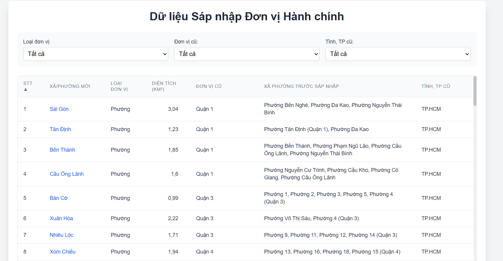

AI Model Test & Benchmark Suite
Compare and validate client-side WASM and WebGPU model execution on local devices. Test preloaded TestOCR.png (Vietnamese Administrative Merger Data) and flow outputs into summarizer models.
Test Source Image

TestOCR.png (Ho Chi Minh City Data)
Contains Vietnamese diacritics & tabular administrative structures.
Benchmark Controller
Event Logging
Ready. Select a model and initialize testing.
Model Load Time
--
Inference Time
--
Extract Speed
--
Model Output
Comparative Benchmark Log
| Pipeline Task | Model ID | Hardware Mode | Load Time | Inference Time | Vietnamese Accuracy | Status |
|---|---|---|---|---|---|---|
| No benchmark runs recorded in this session. | ||||||